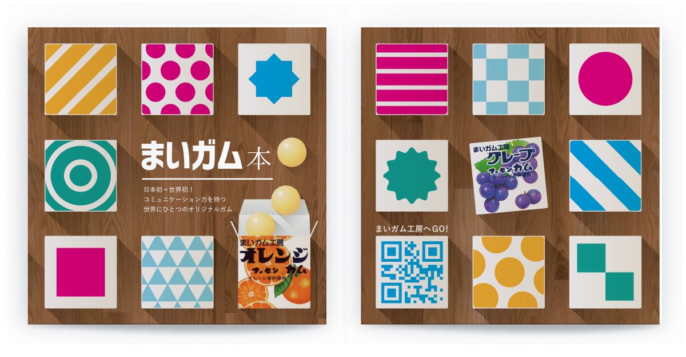
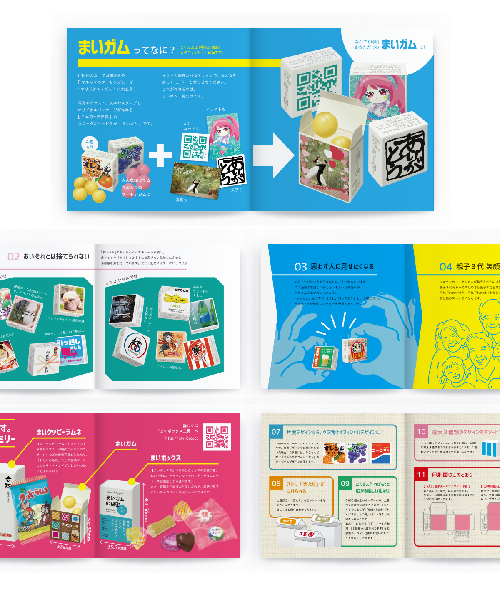

まいガム本
株式会社 吉松
パッケージ / イラスト
2017. 03


パッケージ / イラスト
2017. 03
10円ガムの箱にオリジナル印刷をする「まいガム」の販促用パンフレット。
どんな印刷を施して、どんな使い方をするのか、自由自在な様子を表現するため、ページごとに背景色を変え、カラフルな色面を使うことで多彩さを感じさせる演出としました。また、全体を楽しく元気な、遊び心を感じさせる雰囲気とし、オリジナルのパッケージに対する創作意欲を駆り立てるような様相を目指しました。
＜ BACK
© Moeri Ito